Official website of Assoc. Prof. Dr. Jumreang Tummatorn, Chulabhorn Graduate Institute, Thailand. Our research focuses on organic synthesis, catalysis, azide chemistry, nucleoside chemistry, medicinal chemistry, and bioactive molecules.
Organic Synthesis · Catalysis · Heterocycle Chemistry
We develop efficient catalytic methods using nickel, copper, palladium, bismuth, silver, and related metal catalysts to construct complex heterocyclic frameworks and bioactive molecules.
Strain-release strategies and rearrangement reactions of activated cyclopropanes.
Efficient construction of biologically relevant heterocyclic frameworks.
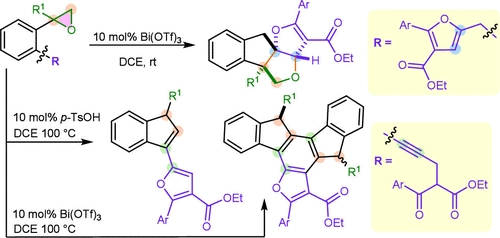
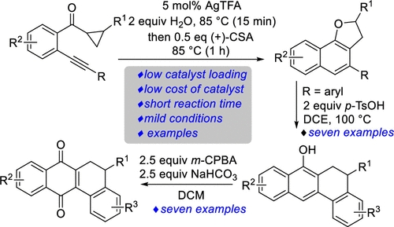
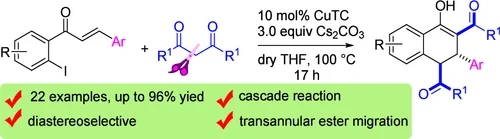
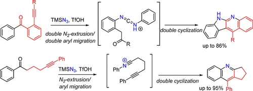
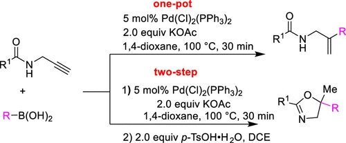
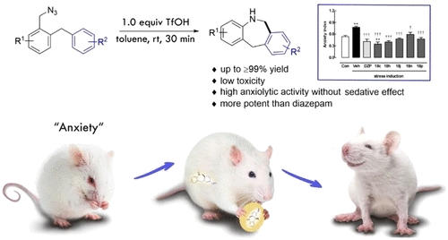
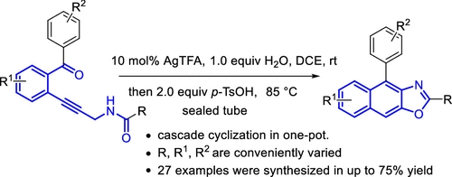
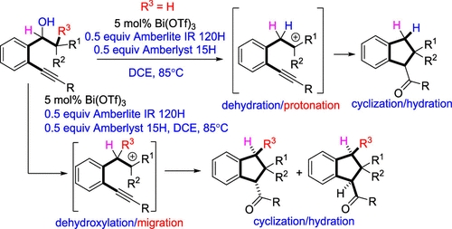
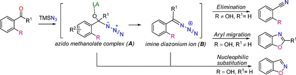
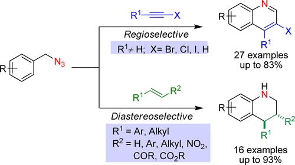
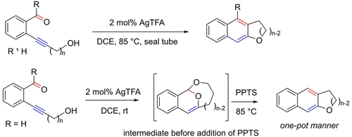
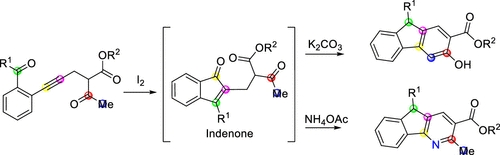
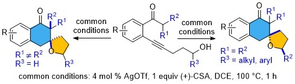
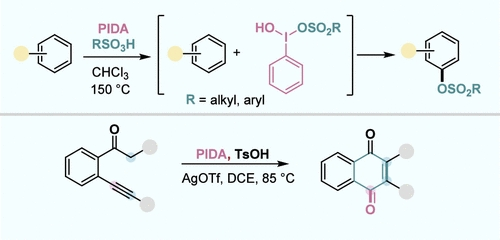
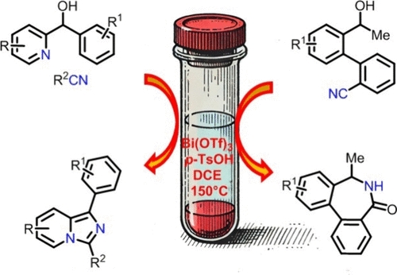
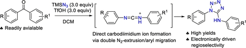
Chemical sciences, Chulabhorn Graduate Institute and Laboratory of Medicinal Chemistry, Chulabhorn Research Institute
Email: jumreang@cri.or.th